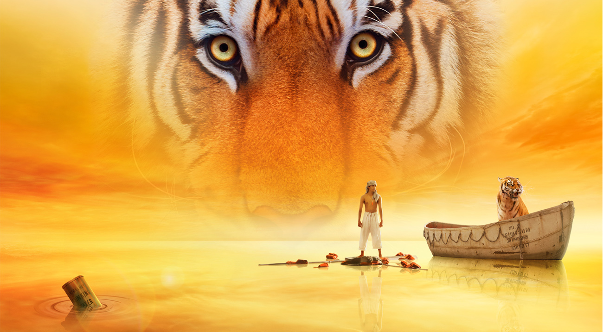

- cast
- filmmaker
- story
Suraj was born and raised in New Dehli, India. His mother is an economist and his father is a software engineer. He has a brother and sister who are both younger than he. Was one of 3,000 to audition for the role of Pi in Life of Pi (2012) and he attended the audition only because his younger brother asked him to.

李安（英文：Ang Lee，1954年10月23日－），著名臺灣導演，曾獲得多個主要國際電影獎項，包括兩屆奧斯卡金像獎、五屆英國電影學院獎、五屆金球獎、兩屆威尼斯影展最佳電影金獅獎以及兩屆柏林影展最佳電影金熊獎。 李安在1999年執導的《臥虎藏龍》獲得第73屆奧斯卡最佳外語片獎及三個技術獎項。2006年和2013年則分別以《斷背山》和《少年PI的奇幻漂流》獲得第78屆奧斯卡金像獎和第85屆奧斯卡金像獎『最佳導演獎』，是第一位獲得該獎項的亞洲導演，也是至今唯一兩度獲得該獎項的亞洲導演。
派西尼·莫利托·帕特爾（綽號「Pi」）是個印度男孩，他熱愛宗教（他同時信仰基督教、印度教及回教），由於家裡開動物園，對動物十分了解，有一對愛他的父母跟一個哥哥拉維。1976年2月，印度的塔米納杜政府解體，皮辛的爸爸認為這是甘地夫人踏上極權專制之路的最後一擊，於是決定舉家遷移到加拿大。
在前往加拿大的過程中，他們以及他們動物園的動物所搭乘的輪船「奇桑號」因為一場暴風雨意外沉沒。在混亂之中，Pi被水手丟上一艘載滿動物的救生艇，上面有一隻斑馬、一隻鬣狗、一隻紅毛猩猩及一隻孟加拉虎Richard Parker。Pi運用他的動物知識與動物和平共處，靠著宗教信仰堅定意志，開始了他在太平洋的奇幻漂流。
Pi被獲救之後，日本海運公司人員來到Pi的病床來了解狀況。Pi照實說出了動物版本：鬣狗殺了斑馬和猩猩之後被孟加拉虎殺掉，剩下Pi和老虎共存在船上。海運公司人員沒有相信，並再三要求Pi說出真相。Pi隨後就說了人類版本：廚師殺了水手跟Pi的母親之後被Pi殺掉；鬣狗代表廚師，斑馬代表水手，猩猩代表媽媽，而老虎就代表Pi的獸性本能。